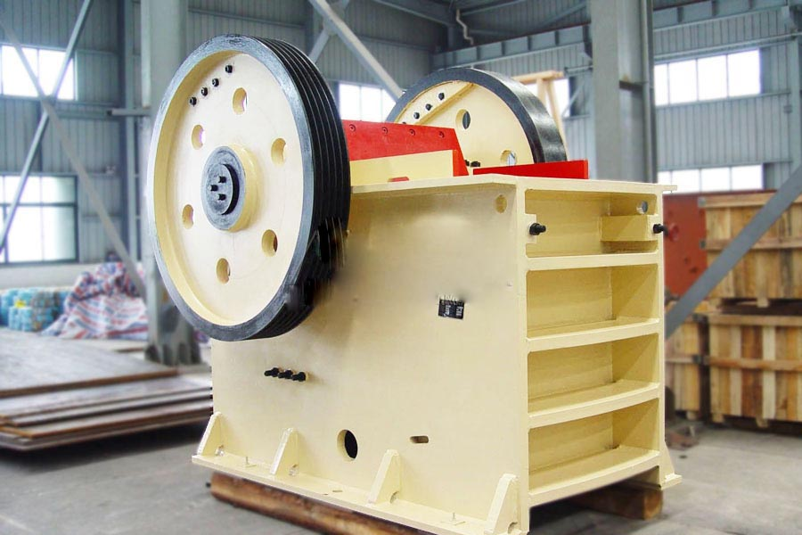

Construction waste crushing production line

Mobile construction waste crushing station for urban construction waste crushing.
kaolin processing plant machinery
kaolin processing plant machinery. Kaolin crusher, kaolin crusher, kaolin crusher price, kaolin crusher manufacturers, kaolin crusher is CAG according to many users experience and advice, combined with modern advanced technology developed by the new product equipment. Kaolin crusher is mainly applied in metallurgy, building materials, chemical and mining and other fields.
Kaolin crusher, crusher manufacturers, kaolin crusher structure: Kaolin broken chassis body, rotor, hammer, counter lining, sieve and other components. Supply kaolin crusher, kaolin clay crusher production line equipment Features: Working hammer, using new technology casting, with wear characteristics.
Kaolin crusher is also called kaolinite crusher because of the name of this material. Kaolin crusher is the stone crusher CAG designed especially for kaolinite processing. CAG kaolin crusher has excellent performance in kaolin crushing and grinding process. CAG kaolin crusher can not only process kaolinite, but also process rocks with the Mosh hardness between 0 and 9.5, such as gypsum, dolomite, marble, basalt, bauxite, garnet, granite, iron ore, copper ore, gold ore, cement and coal, etc. CAG kaolinite crusher has five series, like jaw kaolin crusher, cone kaolin crusher, impact kaolin crusher, VSI kaolinite crusher and mobile kaolinite crusher.

Kaolin crusher
CAG kaolin crusher has excellent performance in kaolin crushing. Except that, it also does well in areas like metallurgy, building materials, chemicals, mining minerals in areas such as grinding materials processing. kaolinite crusher can process materials with the capacity between 1 to 2000t/h. kaolin crusher can not only process kaolinite, but also process rocks with the Mosh hardness between 0 and 9.5, such as gypsum, dolomite, marble, basalt, bauxite, garnet, granite, iron ore, copper ore, gold ore, cement and coal, etc.
Which means kaolin crusher crusher, kaolin applications in other industries, are to be processed to produce powder, in order to join other materials to be used. After the mining of kaolin, it is to first need kaolin crusher for re-crushing for further processing by other devices.
Malaysia kaolin crusher manufacturers. Kaolin Clay mineral is kind of clay or clay rocks in which there is a certain amount of kaolinite subfamily clay minerals. Kaolin has many excellent process performance which makes the kaolin widely used in papermaking, ceramics, paint, rubber, plastics, refractories, chemicals, pesticides, pharmaceuticals, textiles, petroleum, building materials, and defense sectors and so on. And so mining kaolin is widely seen too in many industries, such as ceramic products. With the development of industrial technology and scientific and technological level, there is a growing number of types of ceramic products. It is not only closely related with people's daily life, but also broadly applied in cutting-edge technology of defense applications, such as electrical, atomic energy, jet aircraft, rockets, satellites, semiconductors, microwave technology, integrated circuits, radio, television and radar etc. Almost all need ceramic products. This shows the important role of kaolin mining in the national economy and national defense.
Introduction to Kaolin (Kaolinite) crushing
Crushing kaolin (Kaolinite) is of great importance and necessary in the world. Kaolin crushing in mining is developing more and more and so kaolin crusher plays a more and more important role in kaolin mining. Output of the un-coal department of natural kaolin, according to their quality, plasticity, and sand content, can be divided into three type that is hard, soft and sandy kaolin in industry. The Focused place of mining kaolin around the world is the United States, Britain, Brazil, the Czech Republic and so on. As the rapid development kaolin mining industry in Brazil, the international Three Kingdoms including the United States, Britain, Brazil has formed. They are not only large countries of refined kaolin quarry producing, but also a major exporter. At present, the companies crushing kaolin in China has exceeded 700 whose annual ore production capacity is more than 5.5 million tons and mineral processing capacity 1.8 million tons. If you want any kaolin crusher (kaolinite crusher).
Hard kaolin crusher production line process, hard kaolin crushing process is divided into dry and wet two processes, two different processes require high kaolin crusher ultrafine grinding of raw materials. At present, it has formed a mature hard kaolin crushing equipment and processes.
Malaysia kaolin crusher price. Quality crusher, kaolin crusher, granite impact crusher, crusher on the selection that we have a very high-quality crushing equipment - crusher, impact crusher crusher large, stable, good quality, affordable, today crushing industry is very prominent broken equipment.
Leave Me A Message, Now
If you have any questions regarding equipment prices, production line configuration or other problems, you can send a message to us, we will contact you soon.